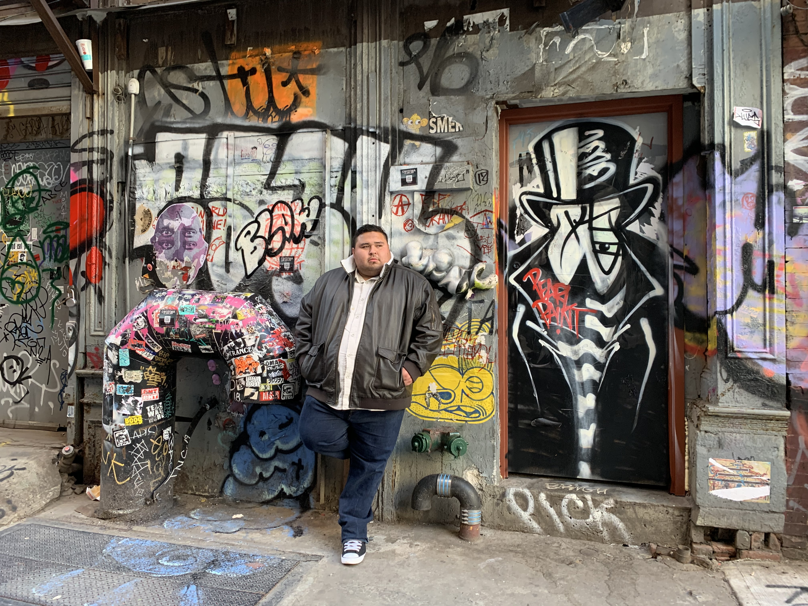

Jorge Velasco || ITIS 3135 Introduction

- Personal Background: I was born in Los Angeles California, moved to Charlotte in 2006. I am the fourth of 6 kids.
- Professional Background: I own my own HVAC Company.. Yorsh Heating and Cooling LLC
- Academic Background: Graduated from Vance High school in 2008, then I got an AA from CPCC, where I returned and got my AS in HVAC.
- Background in this Subject: I don’t really have any background in this subject other than most of my siblings have CS degrees and are making way more money than me.
- Primary Computer Platform: Windows 10-11.
- Courses I'm taking & Why:
- ITIS-3200 - Intro to information security and privacy
- ITIS-3130 - Human Centered Design
- ITIS-3135 - Web App Design and Development
- ITIS-4350 - Rapid Prototyping
- Funny/Interesting Item to Remember me by: At the age of 10 I learned to play the accordion, now I can’t play a single note even if my life depends on it.
- I'd also like to Share: Please Change your air filters regularly, preferably once a month. I can’t tell you how much money I have made in the past from people thinking their A/C is not working and it ends up just being a dirty filter.
- Graduating: Spring 2024
- From: Charlotte